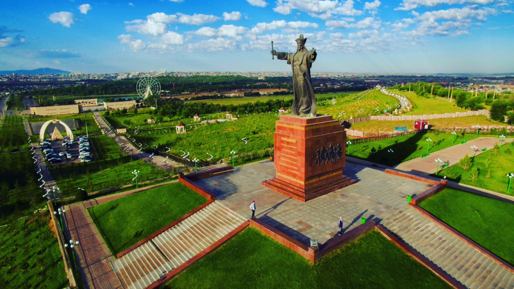

Shymkent was founded in the twelfth century[6] as a caravanserai to protect a nearby Silk Road trade town, Sayram, 10 km to the east. Shymkent grew as a market center for trade between Turkic nomads and the settled Sogdians. It was destroyed several times: by Genghis Khan, soldiers from the southern Khanates, and by nomad attacks. In the early 19th century, it became part of the khanate of Kokand before it was captured by the Russians in 1864.[7] It was renamed Chernyaev in 1914 and renamed Shymkent in 1924. Following the Russian conquest, Shymkent was a city of trade between nomadic Turks and sedentary Turks, and was famous for its kumis
After Kazakhstan gained independence, the city was renamed Shymkent in 1993 as part of the government's campaign to apply Kazakh names to cities. The formal spelling of Shymkent, as codified in Kazakhstan's Constitution, goes against the original Uzbek spelling rules of never having the letter "ы" follow the letter "ш". (Uzbek itself has no letter ы. Furthermore, what is spelled as ш in Kazakh is spelled as ч in Uzbek.) As a result, the new name Шымкент (Shymkent) is used only in Kazakhstan, while other countries continue to use the original spelling Чимкент (Chimkent).
The vegetation of the city is known for its extreme diversity. Trees like oak, elm, poplar, cannan maple, willow, chestnut, acacia, ailanthus, thuja, pine, spruce grow in the city. Farm horticultural crops cherry, apricot, dried apricot, plum, pomegranate, walnut, quince, and grape varieties are widespread.
Citadel of Shymkent
The old heart of Shymkent is getting alive again. After Shymkent was conquered by the Russian Empire in 1864, the citadel fell apart and slept for 150 years under a earth mound. The ruins of the citadel has been exposed and reconstructed for a few years. The citadel opened to the public in 2021.
Zoo Shymkent
The Shymkent Zoo in the north of Shymkent is a nice place for kids. Here you can see regional animals – like the snow leopard – but also species from all over the world. Especially the new Safari Park with Africa’s animals makes the Zoo to one of the best Zoos in Kazakhstan.
Dendropark
The Dendrological park or short Dendropark is a very huge park that gives you the feeling of a real forest in South Kazakhstan. You have to pay a small entry fee before you can enter the park. Along a small river with some boat rental stations for renting small pedal boats you can enjoy the walk and relax after a busy day in Shymkent.
Go to the second page
Check out to know more Shymkent website